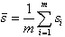
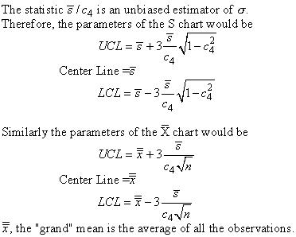
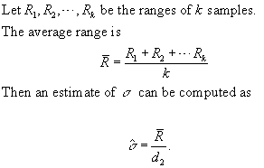
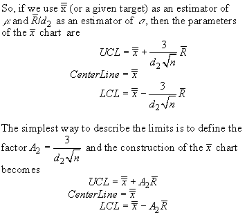
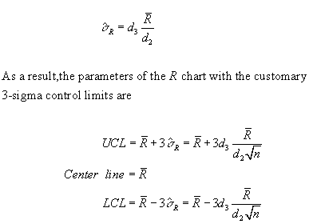
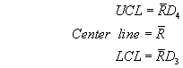
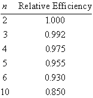

|
6.
Process or Product Monitoring and Control
6.3. Univariate and Multivariate Control Charts 6.3.1. What are Variables Control Charts?
|
|||
| X-Bar and S Shewhart Control Charts | X-Bar and
S Charts
We begin with x-bar and s charts. We need the s chart first. Let us consider the case where we must estimate s by analyzing past data. Suppose we have m preliminary samples at our disposition, each of size n, and let si be the standard deviation of the ith sample. Then the average of the m standard deviations is  |
||
| Control Limits for X-Bar and S Control Charts | We make use of the factor c4 described
on the previous page.
:  It is often convenient to plot the xbar and s charts on one page X-Bar and R Control Charts |
||
| X-Bar and R control charts | If the sample size is relatively small (say
equal to or less than 10), we can use the range instead of the standard
deviation of a sample to construct control charts on xbar and the range,
R. The range of a sample is simply the difference between the largest
and smallest observation.
There is a statistical relationship (Patnaik, 1946) between the range R of a random sample drawn from a normal distribution and s, the standard deviation of that distribution, This relationship depends on the sample size n. The mean of R is d2 s, where the value of d2 is also a function of n. Values of d2 for various sample sizes are found in most textbooks on Statistical Quality Control. An estimator of s is therefore R/d2. Armed with this background we can now develop the x-bar and R control chart.  |
||
| X-Bar control charts | 
|
||
| R control charts | Now the R chart.
This chart controls the process variability since the sample range is related to the process standard deviation . The center line of the R chart is the average range. To compute the control limits we need an estimate of the true, but unknown standard deviation W = R/s This can be found from the distribution of W = R/s (and assuming that the item that we measure follows a normal distribution) . The standard deviation of W is d3 and is a known function of the sample size, n. It is tabulated in many textbooks on Statistical Quality Control. Therefore since R = Ws,
the standard deviation of R is s
R = d3s.
But since the true s
is unknown, we may estimate s R
by
 As was the case with the control chart parameters for the subgroup averages, another set of factors is tabulated, to ease the computations, namely: D3 = 1 - 3 d3 / d2 and D4 = 1 + 3 d3 /d2. These yield 
|
||
| Efficiency of R versus S
Waiting time to signal "out of control"
|
 Time To Detection or Average Run Length (ARL) Two important questions when dealing with control charts are:
For an xbar chart, with no change in the process, we wait on the average 1/p points before a false alarm takes place (where p is the probability of a standard normal observation exceeding 3 in magnitude). In this case, p = .0027 and the ARL is approximately 371. A table comparing Shewhart xbar chart ARL's to CUSUM ARL's for various mean shifts is given later in this section. |
||